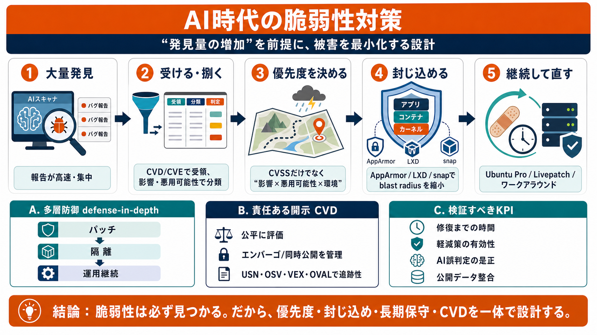

Beyond Mythos: responding to a new threat landscape | Ubuntu
A member of our team will be in touch shortly. Thank you for signing up for our newsletter! Canonical’s security philoso…

A member of our team will be in touch shortly. Thank you for signing up for our newsletter! Canonical’s security philoso…
Canonical announces Ubuntu Pro for WSL · Ubuntu Pro Legacy add-on expands coverage for Ubuntu LTS releases to 15 years ·…
Anthropic and its Project Glasswing partners have identified more than 10,000 high- or critical-severity vulnerabilities…
Canonical's Security Team outlines how it is adapting to AI-accelerated vulnerability discovery, addressing questions ab…
The Ubuntu Security disclosure and embargo policy contains more information about what you can expect when you contact u…